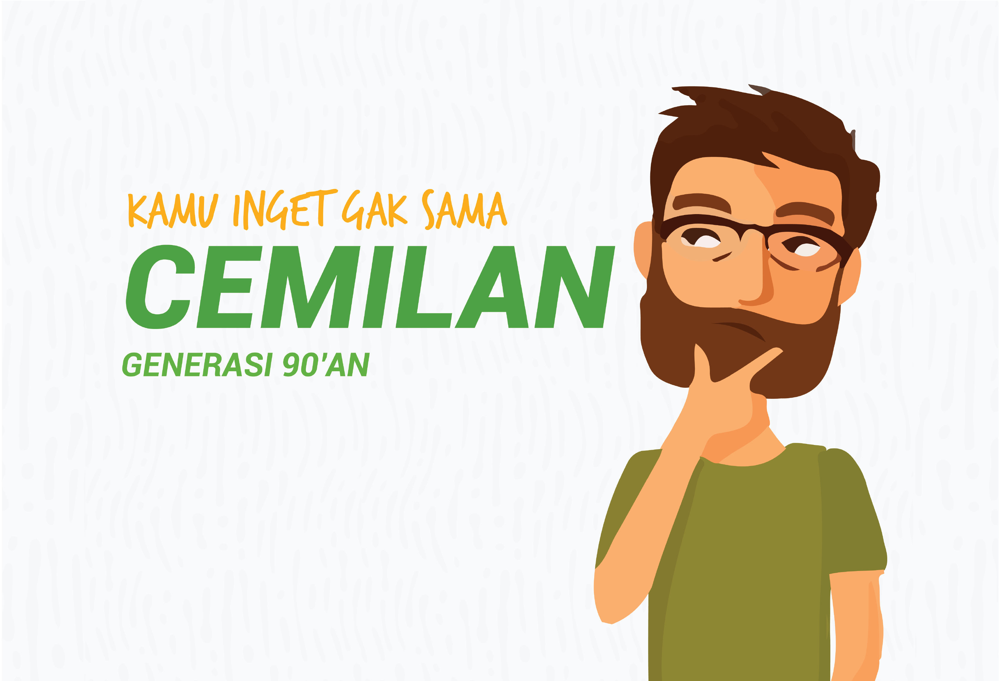

Cemilan Generasi 90'an
Kamu masih inget gak sih sama cemilan generasi 90’an. Banyak sekali cemilan 90’an yang sudah mulai terlupakan. Nah kira-kira apa saja ya? Yuk simak terus yaa!

Pertama ada cokelat payung nih. Sesuai namanya cokelat ini berbentuk payung. Bentuknya runcing memanjang dengan gagang plastik melengkung dibagian bawah. Ciri khas lainnya, cokelat payung dibungkus lembaran plastik warna-warni. Umunya cokleat payung tidak punya isian, hanya berupa milk chocolate yang rasanya manis legit.
Kedua jagoan neon, nah kamu tau gak permen yang satu ini. Ya… ini adalah salah satu permen kesukaan anak-anak suka sama permen ini selain rasanya manis dan juga akan membuat lidah dan bibir menjadi berwarna. Warnanya juga banyak variasinya loh mulai dari merah, biru, dan lainnya.
Ketiga yaitu telur cicak, eittt… tunggu ii bukan telur cicak beneran yaa teman-teman. Ini merupakan salah satu cemilan yang ngehits di tahun 90’an. Ehh tapi kenapa ya dinamain telur cicak?? Yaa.. betul karena bentuknya ini bulat seperti telur cicak hehe. Jangan salah teman-teman cemilan ini pun memiliki cita rasa yang khas dan enak juga loh. Jadi buat kalian yang belum pernah nyobain rugi banget deh.
Nah terakhir nih yang keempat ada magic pop. Mungkin sekarang pun masih ada ya yang sejenis permen ini. Yups magic pop ini salah satu permen yang memiliki sensasi tersendiri loh, karena permen ini akan meletup-letup pas nempel di lidah kamu. Rasanya seperti ada kembang api di dalem mulut gitu. Pokoknya lucu deh. Kamu pernah coba kan ya?
Selain keempat cemilan diatas, kalian pernah makan cemilan generasi 90’an apalagi nih? Yuk kita sharing pengalaman.